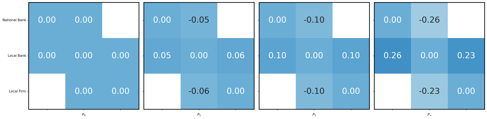
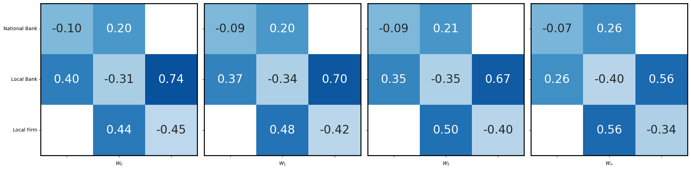
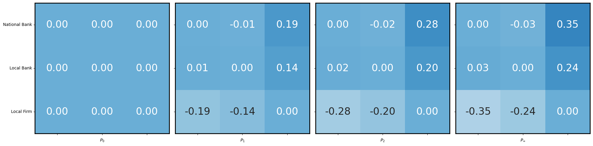
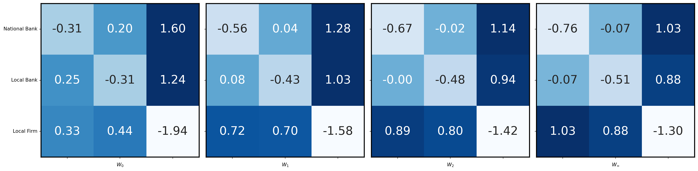

La firma local no puede acceder al banco nacional. Consider a three-firm loans network containing a national bank (firm 1), local bank (firm 2), and local firm (firm 3). Suppose that the local firm cannot access the national bank, so the edge between firms 1 and 3 is prohibited.
Importar librerías necesarias
Code
from sympy import*init_printing()from numpy.linalg import*import matplotlib.pyplot as pltimport seaborn as snsfrom pandas import Series, DataFramefrom scipy.stats import truncnorm, wishartfrom scipy.linalg import solve, solve_sylvesterfrom functools import partialfrom scipy.linalg import toeplitzimport numpy as np
Funciones para calcular W y P
Code
DEFAULT_NUM_FIRMS =3###################### Gen fns####################def generate_firm_covariances(num_firms = DEFAULT_NUM_FIRMS, num_samples = DEFAULT_NUM_FIRMS, risk_aversion =1.0, entry_distribution ='gaussian', noise_param =1.0, subtract_mean =False, return_inv =False): cov_matrix = np.zeros(shape = (num_firms, num_firms))# need n iterations. at each iteration add a random rank-1 matrix.for i inrange(num_samples):if entry_distribution =='gaussian': A = np.random.normal(loc =0.0, scale = noise_param, size=(num_firms, 1))elif entry_distribution =='exponential': A = np.random.exponential(noise_param, size=(num_firms, 1))elif entry_distribution =='eye': A = np.eye(1, num_firms, i).Telse:raiseException(f'Distribution {entry_distribution} is unknown') symmA = np.matmul(A, A.T) cov_matrix += symmA cov_matrix_normalized = np.copy(cov_matrix)if subtract_mean: cov_matrix_normalized = cov_matrix - cov_matrix.mean(axis=1, keepdims=True)# normalize by num_samples so it has a reasonable scale.if entry_distribution !='eye': cov_matrix_normalized *= (1.0/ num_samples)# scale by risk aversion parameter. cov_matrix_normalized *= risk_aversionif return_inv:return cov_matrix_normalized, np.linalg.inv(cov_matrix_normalized)return cov_matrix_normalizeddef generate_means(num_firms = DEFAULT_NUM_FIRMS): init = np.random.normal(loc =5, scale =1.0, size=(num_firms, num_firms))for i inrange(num_firms): init[i][i] =0.0return init###################### Solver fns####################def construct_prohibition_matrices(n, prohibited_tuples):# tuples belong to {0, 1, ..., n-1}# Initialize an empty list to store the matrices matrices = [np.eye(n) for _ inrange(n)] rows_to_delete = {i: [] for i inrange(n)}# Create the identity matrix of size n x n# identity_matrix = np.identity(n)# Loop through each prohibited tuplefor prohibited_edge in prohibited_tuples: i, j = prohibited_edge rows_to_delete[i].append(j) rows_to_delete[j].append(i) matrices = [np.delete(np.eye(n), rows_to_delete[i], axis=0) for i inrange(n)]return matricesdef construct_q_matrices(Sigma_matrices, prohibition_matrices, Gamma =None): out = [] n =len(Sigma_matrices)if Gamma isNone: Gamma = np.eye(n)for i inrange(n): inner =2* Gamma[i, i] * (prohibition_matrices[i] @ Sigma_matrices[i] @ prohibition_matrices[i].T) outer = prohibition_matrices[i].T @ np.linalg.inv(inner) @ prohibition_matrices[i] out.append(outer.copy())return outdef opt_portfolio_mat(S_inv, M, P, Gamma =None): sol_mat = np.matmul(0.5* S_inv, M - P)if Gamma isNone:return sol_matreturn np.matmul(sol_mat, np.linalg.inv(Gamma))# todo update price sylvester for Gammadef price_soln_sylvester(S_inv, mean_matrix): Q =0.5* S_invreturn la.solve_sylvester(Q, Q, np.matmul(Q, mean_matrix) - np.matmul(mean_matrix.T, Q))################################################################# Dynamics################################################################def get_percent_change(current, previous):if current == previous:return100.0try:return (abs(current - previous) / previous) *100.0exceptZeroDivisionError:return0def get_iden_missing_row(n, i): iden = np.eye(n) iden[i, i] =0.0return idendef price_update_naive(i, j, P_init, Q_matrices_list, mean_matrix, eta =1.0):if i == j:return0.0 diff_mat = mean_matrix - P_init prod_i = Q_matrices_list[i] @ diff_mat prod_j = Q_matrices_list[j] @ diff_mat diff_scalar = prod_j[i, j] - prod_i[j, i] denom = Q_matrices_list[i][j, j] + Q_matrices_list[j][i,i] shift = diff_scalar / denom old_price = P_init[i, j] p_prime = shift + old_price new_price = eta * p_prime + (1.0- eta) * old_pricereturn new_price# assuming shared Sigma and Gamma = Idef opt_w_with_edge_constraints(Q_matrices_list, M, P): n = M.shape[0]# prohibition_matrices = construct_prohibition_matrices(n, prohibited_edges_tuples)# Q_matrices_list = construct_q_matrices([Sigma_shared.copy() for _ in range(n)], prohibition_matrices) w_list = []for i inrange(n): w_i = Q_matrices_list[i] @ (M[:, i] - P[:, i]) w_list.append(w_i) W_mat = np.vstack(w_list).T# print('W opt is ', W_mat)return W_matdef run_price_dyanmics_one_step(Q_matrices_list, mean_matrix, P_init, prohibited_edges_tuples = [], eta =1.0):# prohibited_edges_tuples is a list of pairs, e.g. [(1, 3), (2, 3), (2, 5)]# sinv = np.linalg.inv(sigma_shared)# W_current = opt_portfolio_mat(sinv, mean_matrix, P_init)# print('q matrices are: ', Q_matrices_list) W_current = opt_w_with_edge_constraints(Q_matrices_list, mean_matrix, P_init) P_new = np.zeros(shape = P_init.shape) n = P_init.shape[0]for i inrange(n):for j inrange(i):# check that contract prices disagreeif (j, i) notin prohibited_edges_tuples and (i, j) notin prohibited_edges_tuples:# print(f'Updating price at {(j,i)}')# print(W_current)# print(W_current.shape) pct_w_diff = get_percent_change(W_current[i, j], W_current[j, i])if np.abs(pct_w_diff) >1e-1: updated_price_ij = price_update_naive(i, j, P_init, Q_matrices_list, mean_matrix, eta = eta) P_new[i, j] = updated_price_ij P_new[j, i] =-1* updated_price_ijelse: P_new[i, j] = P_init[i, j] P_new[j, i] = P_init[j, i]# W_new = opt_portfolio_mat(sinv, mean_matrix, P_new) W_new = opt_w_with_edge_constraints(Q_matrices_list, mean_matrix, P_new)return W_new, P_newdef run_price_dynamics(sigma_shared, mean_matrix, prohibited_edges_tuples = [], num_iterations =50, eta =0.0, Gamma=None): n = mean_matrix.shape[0] prohibition_matrices = construct_prohibition_matrices(n, prohibited_edges_tuples) Q_matrices_list = construct_q_matrices([sigma_shared.copy() for _ inrange(n)], prohibition_matrices, Gamma=Gamma)#print(f'Q matrices: {Q_matrices_list}') P_current = np.zeros_like(sigma_shared)# sinv = np.linalg.inv(sigma_shared) W_current = opt_w_with_edge_constraints(Q_matrices_list, mean_matrix, P_current) W_list = [] P_list = [] W_list.append(W_current) P_list.append(P_current)for idx inrange(num_iterations): W_current, P_current = run_price_dyanmics_one_step(Q_matrices_list, mean_matrix, P_current, prohibited_edges_tuples, eta = eta) W_list.append(W_current) P_list.append(P_current)#if idx % 500 == 0:#print(idx)# print(f'At step {_}')return W_list, P_listpairwise_negotiations_recompute =True
fig, axes = plt.subplots(1, 4, figsize=(20, 5))mask = [[False, False, True], [False, False, False], [ True, False, False]]global_min =-1.0global_max =1.0# Iterate over the heatmaps and axesindex_set = [0, 1, 2, -1]custom_annotations = [ ("X", 0, 2), # (text, row, column) ("X", 2, 0),]for i, ax inenumerate(axes): data_with_mask = np.where(mask, np.nan, P_list[index_set[i]]) res = sns.heatmap(data_with_mask, annot=True, ax=ax, cmap='Blues', cbar=False, annot_kws={"size": 24}, vmin=global_min, vmax=global_max, fmt='.2f')for _, spine in res.spines.items(): spine.set_visible(True) spine.set_linewidth(2) spine.set_color('k')# Create arrows from 0 to 1 and 1 to 2arrowprops =dict(facecolor='black', shrink=0.05)# Remove y-axis labels for the second and third subplotsaxes[1].set_yticklabels([])axes[2].set_yticklabels([])axes[3].set_yticklabels([])axes[0].set_yticklabels(['National Bank', 'Local Bank', 'Local Firm'], rotation=0)axes[1].set_xticklabels([])axes[2].set_xticklabels([])axes[0].set_xticklabels([])axes[3].set_xticklabels([])for i inrange(3): axes[i].set_xlabel(fr'$P_{{{index_set[i]}}}$')axes[3].set_xlabel(r'$P_\infty$')# Adjust subplot spacingplt.tight_layout()# plt.savefig('../figs/prices_side_by_side.eps', format='eps', dpi=700)

Los valores reflejan cómo el Local Bank actúa como intermediario entre las otras dos firmas, recibiendo pagos de ambas. Debido a la restricción entre el National Bank y la Local Firm, el Local Bank aprovecha su posición y establece precios y tamaños de contrato que maximizan su utilidad en el sistema.
Valor de W
Code
fig, axes = plt.subplots(1, 4, figsize=(20, 5))global_min =-1.0global_max =1.0# Iterate over the heatmaps and axes#index_set = [0, 1, 2, -1]# custom_annotations = [# ("X", 0, 2), # (text, row, column)# ("X", 2, 0),# ]mask = [[False, False, True], [False, False, False], [ True, False, False]]for i, ax inenumerate(axes): data_with_mask = np.where(mask, np.nan, W_list[index_set[i]]) res = sns.heatmap(data_with_mask, annot=True, ax=ax, cmap='Blues', cbar=False, annot_kws={"size": 24}, vmin=global_min, vmax=global_max, fmt='.2f')for _, spine in res.spines.items(): spine.set_visible(True) spine.set_linewidth(2) spine.set_color('k')# for annotation in custom_annotations:# text, row, col = annotation# ax.annotate(text, xy=(col + 0.5, row + 0.5), color='red',# fontsize=80, ha='center', va='center')# Create arrows from 0 to 1 and 1 to 2arrowprops =dict(facecolor='black', shrink=0.05)# Remove y-axis labels for the second and third subplotsaxes[1].set_yticklabels([])axes[2].set_yticklabels([])axes[3].set_yticklabels([])axes[0].set_yticklabels(['National Bank', 'Local Bank', 'Local Firm'], rotation=0)axes[1].set_xticklabels([])axes[2].set_xticklabels([])axes[0].set_xticklabels([])axes[3].set_xticklabels([])for i inrange(3): axes[i].set_xlabel(fr'$W_{{{index_set[i]}}}$')axes[3].set_xlabel(r'$W_\infty$')# Adjust subplot spacingplt.tight_layout()# plt.savefig('../figs/w_side_by_side.eps', format='eps', dpi=700)

Los valores reflejan el equilibrio en un sistema donde la firma 2 (Local Bank) mantiene contratos con ambas firmas, maximizando su utilidad como intermediario entre el National Bank y la Local Firm, quienes no pueden interactuar directamente.
fig, axes = plt.subplots(1, 4, figsize=(20, 5))mask = [[False, False, False], [False, False, False], [ False, False, False]]global_min =-1.0global_max =1.0# Iterate over the heatmaps and axesindex_set = [0, 1, 2, -1]custom_annotations = [ ("X", 0, 2), # (text, row, column) ("X", 2, 0),]for i, ax inenumerate(axes): data_with_mask = np.where(mask, np.nan, P_list[index_set[i]]) res = sns.heatmap(data_with_mask, annot=True, ax=ax, cmap='Blues', cbar=False, annot_kws={"size": 24}, vmin=global_min, vmax=global_max, fmt='.2f')for _, spine in res.spines.items(): spine.set_visible(True) spine.set_linewidth(2) spine.set_color('k')# Create arrows from 0 to 1 and 1 to 2arrowprops =dict(facecolor='black', shrink=0.05)# Remove y-axis labels for the second and third subplotsaxes[1].set_yticklabels([])axes[2].set_yticklabels([])axes[3].set_yticklabels([])axes[0].set_yticklabels(['National Bank', 'Local Bank', 'Local Firm'], rotation=0)axes[1].set_xticklabels([])axes[2].set_xticklabels([])axes[0].set_xticklabels([])axes[3].set_xticklabels([])for i inrange(3): axes[i].set_xlabel(fr'$P_{{{index_set[i]}}}$')axes[3].set_xlabel(r'$P_\infty$')# Adjust subplot spacingplt.tight_layout()# plt.savefig('../figs/prices_side_by_side.eps', format='eps', dpi=700)

Valor de W
Code
fig, axes = plt.subplots(1, 4, figsize=(20, 5))global_min =-1.0global_max =1.0# Iterate over the heatmaps and axes#index_set = [0, 1, 2, -1]# custom_annotations = [# ("X", 0, 2), # (text, row, column)# ("X", 2, 0),# ]mask = [[False, False, False], [False, False, False], [ False, False, False]]for i, ax inenumerate(axes): data_with_mask = np.where(mask, np.nan, W_list[index_set[i]]) res = sns.heatmap(data_with_mask, annot=True, ax=ax, cmap='Blues', cbar=False, annot_kws={"size": 24}, vmin=global_min, vmax=global_max, fmt='.2f')for _, spine in res.spines.items(): spine.set_visible(True) spine.set_linewidth(2) spine.set_color('k')# for annotation in custom_annotations:# text, row, col = annotation# ax.annotate(text, xy=(col + 0.5, row + 0.5), color='red',# fontsize=80, ha='center', va='center')# Create arrows from 0 to 1 and 1 to 2arrowprops =dict(facecolor='black', shrink=0.05)# Remove y-axis labels for the second and third subplotsaxes[1].set_yticklabels([])axes[2].set_yticklabels([])axes[3].set_yticklabels([])axes[0].set_yticklabels(['National Bank', 'Local Bank', 'Local Firm'], rotation=0)axes[1].set_xticklabels([])axes[2].set_xticklabels([])axes[0].set_xticklabels([])axes[3].set_xticklabels([])for i inrange(3): axes[i].set_xlabel(fr'$W_{{{index_set[i]}}}$')axes[3].set_xlabel(r'$W_\infty$')# Adjust subplot spacingplt.tight_layout()# plt.savefig('../figs/w_side_by_side.eps', format='eps', dpi=700)

Sin restricciones el National Bank le presta directamente a la Local Firm, los tamaños de los contratos W aumentan y los precios P muestran que ahora la Local Firm pide prestado a ambas firmas.
2 Actualización 8/10/2024
Demostrar que existe un punto de equilibrio único y estable, para garantizar que los agentes alcanzan un equilibrio óptimo en la distribución de sus transacciones, y que sus decisiones convergerán a ese punto.
2.1 Teorema 1 (Existencia y unicidad de un punto estable)
Los agentes alcanzarán siempre el mismo punto de equilibrio si comienzan desde condiciones iniciales diferentes.
2.2 Teorema 4 (Condiciones de convergencia)
Punto estable al cual se converge.
3 Actualización 2/10/2024
3.1 Objetivo
El objetivo general es desarrollar un modelo teórico que permita analizar cómo los agentes financieros optimizan la distribución de sus transacciones entre sistemas financieros tradicionales y blockchain, maximizando su utilidad total.
El modelo teórico derivará las condiciones bajo las cuales los agentes alcanzan un equilibrio estable entre la cantidad de transacciones que destinan a blockchain y a los sistemas tradicionales, o en qué condiciones uno de los sistemas prevalece sobre el otro.
3.2 Problema de Maximización
El agente debe optimizar dos decisiones:
\(\alpha\): La proporción de la transacción destinada a blockchain.
\(w_i\): El tamaño total de la transacción.
Y tiene que resolver el siguiente problema de optimización:
\((1 - \alpha) w_i\): Proporción del contrato total \(w_i\) que el agente asigna al sistema tradicional.
\(\alpha w_i\): Proporción del contrato total que el agente asigna a blockchain.
\(\alpha\): Proporción de la transacción destinada a blockchain, con \(\alpha \in [0, 1]\).
3.3.2 Beneficios esperados:
Para el sistema tradicional:
\(\tilde{\mu}_i\): Beneficios esperados por el agente en el sistema tradicional.
\(\tilde{P}\): Costos de transacción en el sistema tradicional (tarifas bancarias, costos de intermediación).
\(e_i\): Vector que representa al agente.
Para blockchain:
\(\hat{\mu}_i\): Beneficios esperados en blockchain.
\(\hat{P}\): Costos de transacción en blockchain (comisiones de gas).
3.3.3 Riesgos financieros en cada sistema:
Sistema tradicional:
\(- \gamma_i (1 - \alpha) w_i^T \tilde{\Sigma} (1 - \alpha) w_i\): Este término representa los riesgos financieros (volatilidad) en el sistema tradicional, con \(\tilde{\Sigma}\) como la matriz de covarianza de riesgos.
Blockchain:
\(- \gamma_i \alpha w_i^T \hat{\Sigma} \alpha w_i\): Riesgos financieros en blockchain, ponderados por \(\alpha\), donde \(\hat{\Sigma}\) es la matriz de covarianza de los riesgos financieros en blockchain.
3.3.4 Riesgos interdependientes entre sistemas:
\(\gamma \cdot R_{\text{tradicional}}(w_i, H_{\text{blockchain}})\): Este término refleja el riesgo regulatorio en el sistema tradicional, que depende del tamaño de la transacción (\(w_i\)) y del riesgo de hackeo en blockchain (\(H_{\text{blockchain}}\)).
\(\gamma \cdot \frac{H_{\text{blockchain}}(w_i, R_{\text{tradicional}})}{N_{\text{blockchain}}}\): Riesgo de hackeo en blockchain, que depende del tamaño de la red (\(N_{\text{blockchain}}\)) y el riesgo en el sistema tradicional.
3.3.5 Confianza institucional en el sistema tradicional:
\(\phi_i \cdot C_{\text{tradicional}}\): Término que captura el nivel de confianza institucional en las instituciones financieras tradicionales, que afecta positivamente la utilidad derivada de operar en ese sistema.
3.3.6 Efectos de red en blockchain:
\(\eta_i \cdot N_{\text{blockchain}}\): Término que mide el efecto de red en blockchain. A medida que el número de participantes en la red (\(N_{\text{blockchain}}\)) crece, la seguridad y la liquidez aumentan, lo que incrementa la utilidad para los agentes.
4 Idea de Tesis 26/09/2024
Comparar la utilidad y los riesgos que enfrentan los participantes en sistemas financieros basados en blockchain frente a los sistemas financieros tradicionales. A través de funciones de utilidad para ambos sistemas, se analizarán los costos de transacción, riesgos de seguridad, confianza institucional y efectos de red. El objetivo es entender qué factores determinan la preferencia de los usuarios y si es posible lograr un equilibrio estable en cada sistema o si uno prevalecerá sobre el otro.
4.1 Posible función de utilidad en un sistema blockchain
La función de utilidad para un participante \(i\) en un sistema blockchain se definiría como: